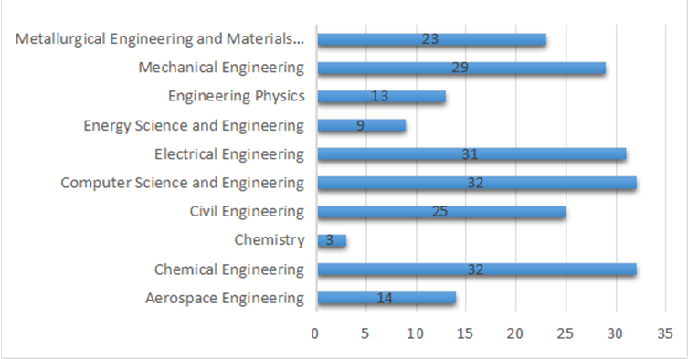
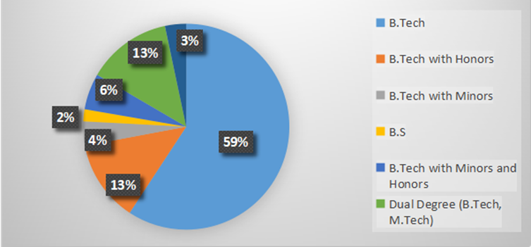
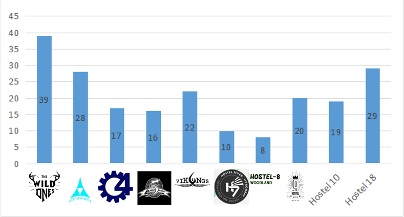
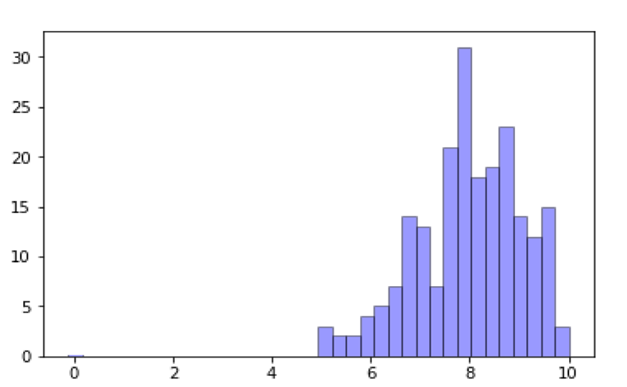
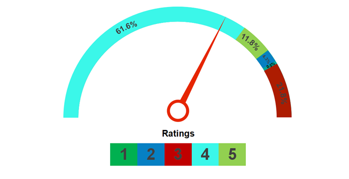
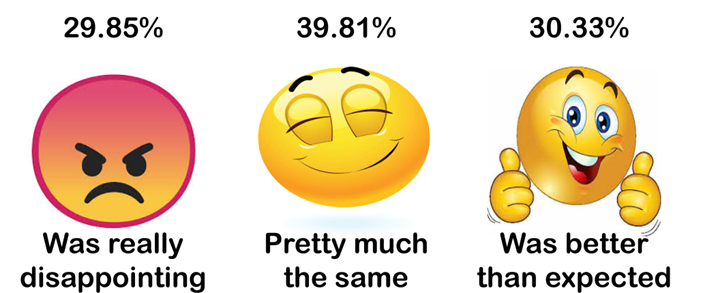
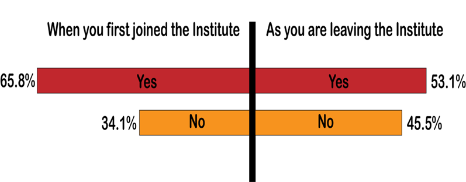
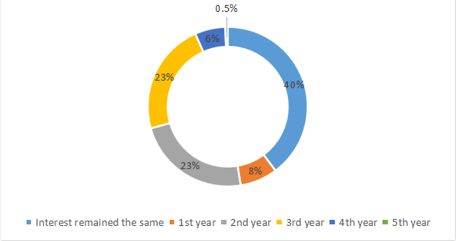
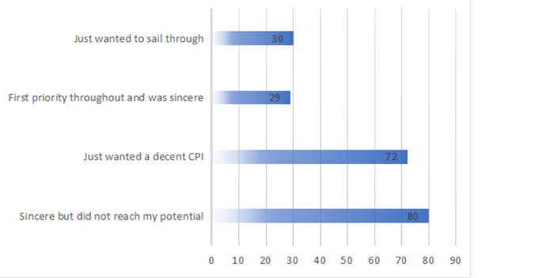
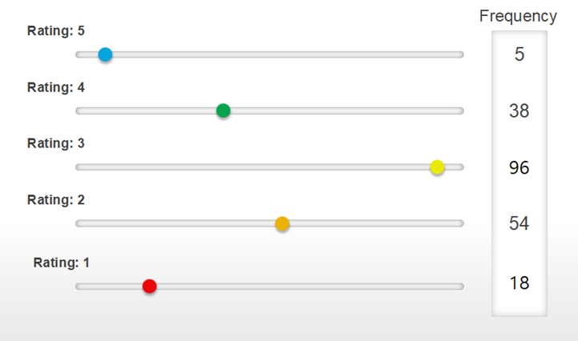

Academics
Indian Institute Of Technology Bombay being the most esteemed engineering institute of India, has seen many facets of students towards the academics. We also get to know many aspects and attitude of students in general towards academics at IIT Bombay.
We surveyed the passing out batch to get a more thorough insights into students mentality towards academic environment here at the institute.
Here are the bullet points for the same.
- A total of 215 students filled the survey form and presented their views across a wide range of questions ranging from departments to CPI to Attitude towards academics and many more.
- From the total of 215 students, 211 students are graduating this year while the remaining 4 students took extensions.
- Constantly recognized as the most decorated institute of the country, 95.2% of students agreed that CPI plays a very important role.
- Upon asking, around 66% students said that they were highly enthusiasts about core of their department, which positively showed that they liked their department.

Which Department you are from?
The above analysis shows that the awareness of the form was distributed among all the graduating students. The majority of responses came from CS and Chemical Engineering department, followed by Electrical Engineering and Mechanical Engineering.
What Degree are you Graduating With?
From the corresponding graduating students, a majority of them graduated with a B.Tech degree. Additionally, 13% and 4% students graduated with Honors and Minors degree respectively.
Among others, 13% were the Dual Degree holders with additional 6% with a Minors and Honors degree too. The remaining 2% were the B.S certificate holders.


Which Hostel did you Stay in?
Most of the students from the responses were the residents of Hostel 2 followed by the newly formed Hostel 18 with the number of 39 students and 29 students respectively. Following both comes 28 students from Hostel 3 and the other students distributed among other hostels more or less evenly.

What was your CPI?
The above graph clearly shows that a vast majority of students(79) were in between 8-9 CPI group. The density around 8-9 is far more greater, followed by the 7-8 CPI group with a total 54 students. Additional 39 students were in the CPI range of 9-10.
How important a role do you think one’s CPI plays?
Gauging the responses of the students, most of them told that CPI do play an important role and one should maintain a good level of CPI. 73.4% of the students rated the importance of CPI, 4 and above. 21.8% rated it 3 and the rest 4.8% rated it below 3.


How different was the reality compared to your expectations of your Department (before coming to IIT)?
The above graph clearly shows that a vast majority of students(79) were in between 8-9 CPI group. The density around 8-9 is far more greater, followed by the 7-8 CPI group with a total 54 students. Additional 39 students were in the CPI range of 9-10.
Where you interested in Core?
Upon asking their interests in Core, the plot above shows that around 139 students out of 215 students were initially interested in Core Sector, which reduced to 112 at the end.
Similarly, the rest of the students showed no interested in the Core Sector when they joined the institute, which got further lengthened to 45.5% from 34.1%.


When did you lose/gain interests in the Core?
With the follow up to the previous question, 47 students of the following 215 students lost interest in the Core while on the other hand, 24 others gained interest in the Core Sector.
With the follow up to the previous question, 47 students of the following 215 students lost interest in the Core while on the other hand, 24 others gained interest in the Core Sector.
What was your general attitude towards your academic performance?
Out of 215 students, 37.9% admitted that they were sincere but failed to reach their potential. 34.1% just wanted a decent CPI, the other 30 students just wanted to sail through. And the remaining rest 29 students agreed upon Academics being their first priority throughout and were sincere.


How involving were the teaching methodologies adopted in the Institute?
The rating above shows that most of the students were not happy with the teaching methodologies in the Institute. Only 20.4% students rated the teaching methods in the institute as good and very good. A majority of them rated the teaching methods in the institute as average with a rating of 45.5%.